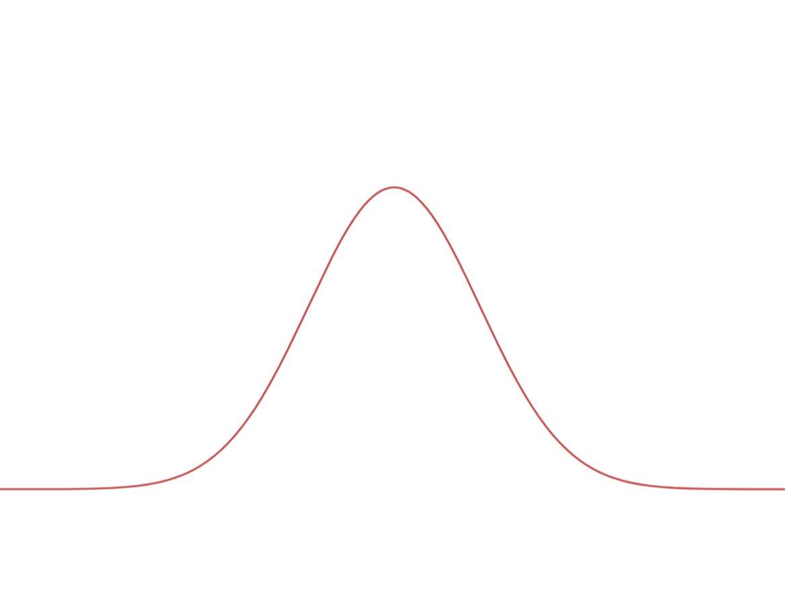
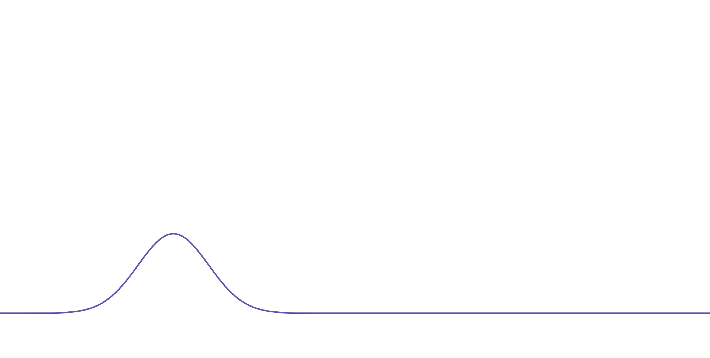
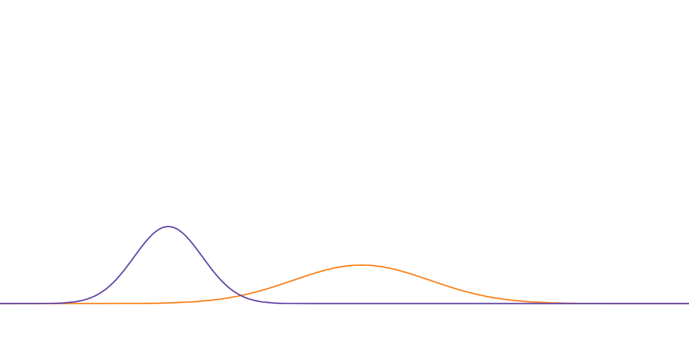
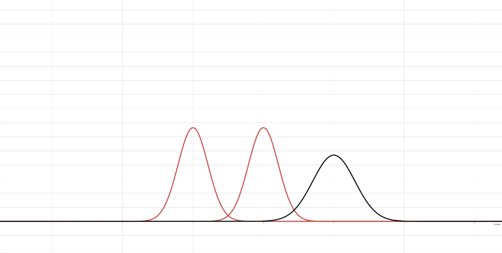
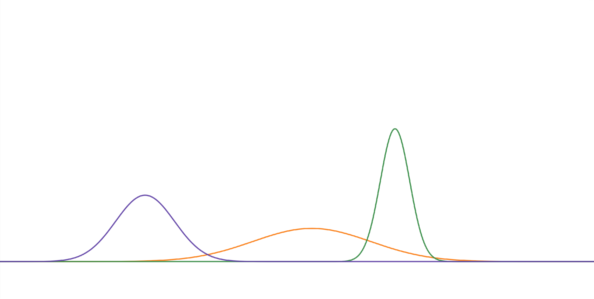
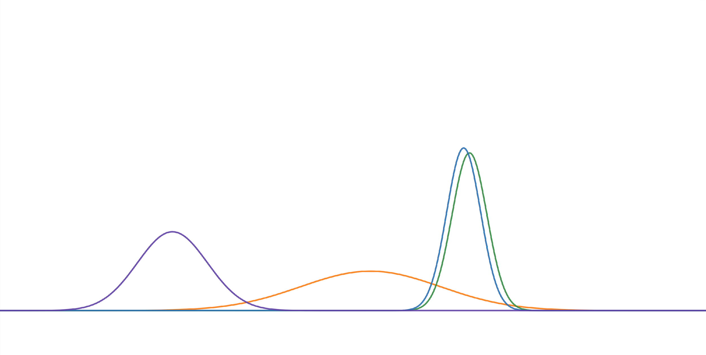

Kalman Filter 이해 정리
이 글은 내가 Kalman Filter를 공부하면서 정리한 이해를 다시 글로 풀어쓴 것이다. 핵심은 Kalman Filter를 단순한 smoothing filter가 아니라, 불확실한 상태를 Gaussian으로 표현하고, 예측과 측정을 반복해서 결합하는 재귀적 Bayesian state estimator로 이해하는 것이다.
발표자료의 14-50페이지 흐름을 기준으로, 재귀 필터의 개념, 초기 상태, prediction, process noise, measurement noise, Bayes update, Gaussian product, Kalman gain, 그리고 위치 측정만으로 속도를 추정하는 원리까지 순서대로 정리한다.
1. Kalman Filter는 왜 재귀 필터인가
재귀적이라는 말은 현재 시점의 값을 이전 시점의 결과로부터 다시 계산한다는 뜻이다. Kalman Filter는 모든 과거 measurement를 매번 처음부터 다시 풀지 않는다. 대신 직전 시점까지의 추정 결과를 하나의 요약된 상태로 들고 있다가, 새로운 측정값이 들어오면 그 정보만 추가해서 현재 상태를 갱신한다.
previous estimate + new measurement -> current estimate여기서 previous estimate는 단순한 위치값 하나가 아니다. 상태의 평균과 오차 공분산을 함께 가진다. 즉 "내가 보기에 현재 위치는 여기쯤이다"와 "그 추정이 얼마나 불확실한가"를 같이 들고 다음 step으로 넘어간다.
2. 첫 관측과 초기 상태
처음 객체가 관측되면 아직 과거 정보가 충분하지 않다. 그래서 구현에서는 첫 measurement를 초기 위치로 놓고,
속도는 0 또는 초기 두 프레임의 차분값으로 둔다. 동시에 초기 공분산 P_0를 정해야 한다.
중요한 점은 초기 상태가 "정답"이라는 뜻이 아니라는 것이다. 첫 관측값도 measurement noise를 가진다. 따라서 초기 상태는 첫 관측을 기반으로 한 첫 번째 믿음이고, 이후 measurement가 들어오면서 점점 보정된다.
x_0 = [position_0, velocity_0]^T
P_0 = initial estimation uncertainty"첫 관측에서는 추정하지 않는다"는 표현은 실무 구현 관점의 설명으로는 괜찮다. 더 엄밀하게는 첫 관측으로 posterior를 초기화한다고 볼 수 있다. 그 다음 관측부터 prediction과 update loop가 본격적으로 돈다.
3. 상태는 시스템의 구성 요소다
Kalman Filter에서 상태 x는 추정하고 싶은 물리량을 모은 벡터다. Tracking에서 객체의 속도를
안정적으로 알고 싶다면 위치만 상태로 둘 수 없다. 위치와 속도를 같이 상태로 둬야 한다.
x = [p, v]^T2D tracking이면 상태는 더 커질 수 있다.
x = [px, py, vx, vy]^T
3D라면 pz, vz도 들어갈 수 있고, 객체의 크기, yaw, yaw rate까지 상태에 넣는
추적기도 있다. 무엇을 상태로 둘지는 "무엇을 추정하고 싶은가"와 "어떤 motion model을 쓸 것인가"에 따라
결정된다.
4. 등속도 모델: 위치와 속도의 관계를 시스템으로 만든다
발표자료에서 사용한 핵심 motion model은 등속도 모델이다. 등속도 모델은 짧은 시간 동안 객체의 속도가
유지된다고 가정한다. 1D 상태가 [p, v]라면 다음처럼 쓸 수 있다.
p_k = p_{k-1} + dt * v_{k-1}
v_k = v_{k-1}이를 행렬로 쓰면 다음과 같다.
[p_k] [1 dt] [p_{k-1}]
[v_k] = [0 1] [v_{k-1}]
여기서 A가 예측 시스템이다. Kalman Filter의 prediction은 결국 이전 상태를 이 시스템에
통과시켜 현재 상태를 예측하는 과정이다.
x_k^- = A x_{k-1}5. 예측 시스템은 항상 틀릴 수 있다
등속도 모델은 유용하지만 현실을 완벽하게 설명하지 못한다. 실제 객체는 가속할 수 있고, 갑자기 감속할 수도 있고, 선회할 수도 있다. 센서 frame 사이에서 객체가 의도치 않게 방향을 바꾸거나 관측 자체가 흔들릴 수도 있다.
그래서 prediction은 항상 불확실성을 가진다. 이 불확실성을 process noise로 두고, 그 공분산을
Q라고 한다. Q는 "내 motion model이 어느 정도 틀릴 수 있는가"를 수치화한 것이다.
6. Gaussian으로 불확실성을 표현한다
Kalman Filter는 상태의 불확실성을 Gaussian distribution으로 표현한다. 여기서 평균은 가장 그럴듯한 상태이고, 분산 또는 공분산은 그 상태가 얼마나 흔들릴 수 있는지를 나타낸다.
- 평균이 이동하면 추정 위치가 이동한다.
- 분산이 커지면 불확실성이 커진다.
- 분산이 작아지면 더 확신하는 추정이 된다.
상태가 1차원이면 Gaussian은 종 모양 곡선으로 그릴 수 있다. 상태가 여러 변수로 이루어지면 다변량 Gaussian이 되고, 이때 공분산 행렬이 각 변수의 불확실성과 변수 간 상관관계를 함께 표현한다.

7. P, Q, R을 구분해야 한다
Kalman Filter를 공부할 때 가장 헷갈리는 부분은 공분산 기호들이다. 내 이해를 기준으로 정리하면 다음과 같다.
P: 현재 추정 상태의 오차 공분산이다. 내가 가진 추정값이 실제 상태에서 얼마나 틀릴 수 있는지를 나타낸다.Q: process noise covariance다. motion model을 따라 예측할 때 새로 추가되는 불확실성이다.R: measurement noise covariance다. 센서 또는 detection 결과가 얼마나 틀릴 수 있는지를 나타낸다.
그래서 Q를 "상태의 공분산"이라고 부르면 헷갈린다. 상태 추정의 현재 불확실성은 P이고,
Q는 prediction 단계에서 P에 더해지는 모델 불확실성이다.
8. Prediction에서 평균과 공분산이 어떻게 변하는가
Prediction 단계는 두 줄로 요약된다.
x_k^- = A x_{k-1}
P_k^- = A P_{k-1} A^T + Q
첫 줄은 평균의 예측이다. 이전 상태 평균이 motion model을 따라 현재 위치로 이동한다.
두 번째 줄은 불확실성의 예측이다. 이전 추정 불확실성이 시스템 행렬을 타고 전파되고, 여기에 process noise
Q가 더해진다.
발표자료에서 말한 "예측 후 Gaussian이 넓어진다"는 설명은 이 수식과 연결된다. 예측은 미래를 맞히는 행위라서 시간이 갈수록 불확실성이 커지는 것이 자연스럽다.


9. "Gaussian 분포의 합"을 더 정확히 이해하기
발표자료의 직관처럼 Gaussian과 Gaussian을 더하면 Gaussian이 된다는 말은 맞는 방향이다. 다만 여기서 더한다는 것은 확률밀도함수 값을 그냥 더한다는 뜻이 아니다. 더 정확히는 Gaussian random variable에 독립 Gaussian noise가 더해지면 결과 random variable도 Gaussian이라는 뜻이다.
x_k = A x_{k-1} + w
w ~ N(0, Q)
이때 x_{k-1}의 불확실성과 w의 불확실성이 합쳐지므로 covariance가 커진다.
그래서 prediction covariance 식에 + Q가 붙는다.

10. Measurement도 불확실하다
센서가 준 측정값도 정답이 아니다. LiDAR, camera, radar, detector output 모두 오차를 가진다.
따라서 measurement도 하나의 Gaussian likelihood로 볼 수 있다. 측정값 자체가 평균이고, measurement noise
covariance R이 그 측정의 불확실성을 나타낸다.
z_k = H x_k + v
v ~ N(0, R)
H는 상태를 measurement space로 보내는 행렬이다. 예를 들어 상태가
[position, velocity]인데 센서는 position만 측정한다면, H는 position 성분만
꺼내는 역할을 한다.

11. Bayes Filter 관점
Kalman Filter의 update는 Bayes rule로 이해할 수 있다. 이전 시점의 posterior는 현재 시점 prediction을 거쳐 prior가 되고, 새 measurement가 들어오면 likelihood와 결합해 새로운 posterior를 만든다.
posterior = normalization * likelihood * prior이 구조가 중요한 이유는 measurement를 무조건 믿지 않는다는 점이다. 이미 가지고 있던 prior와 새 measurement likelihood의 상대적 불확실성을 보고, 둘 사이의 적절한 위치로 posterior를 만든다.
- 이전 posterior를 motion model로 예측한다.
- 예측 결과가 현재 prior가 된다.
- 새 measurement를 likelihood로 해석한다.
- prior와 likelihood를 곱해 현재 posterior를 만든다.
12. Gaussian의 곱과 update의 의미
Gaussian prior와 Gaussian likelihood를 곱하면 다시 Gaussian 형태가 된다. 두 분포가 같은 정보를 서로 다른 불확실성으로 말하고 있다고 보면, 곱한 결과는 두 정보를 모두 반영한 새로운 믿음이다.
이때 새 평균은 더 작은 분산을 가진 분포 쪽에 더 가까워진다. 예측이 더 확실하면 예측 쪽에 가까워지고, measurement가 더 확실하면 measurement 쪽에 가까워진다. 새 분산은 정보가 결합되었기 때문에 더 작아진다.


13. Kalman Gain은 무엇을 결정하는가
Kalman gain은 prediction과 measurement 사이에서 measurement residual을 얼마나 반영할지 결정하는 동적 가중치다.
K_k = P_k^- H^T (H P_k^- H^T + R)^-1Update 식은 다음처럼 쓴다.
x_hat_k = x_hat_k^- + K_k (z_k - H x_hat_k^-)
괄호 안의 z_k - H x_hat_k^-는 innovation 또는 residual이다. 내가 예측한 measurement와
실제 measurement가 얼마나 다른지를 나타낸다. Kalman gain은 이 차이를 상태에 얼마나 반영할지 정한다.
P_k^-가 크면 예측이 불확실하므로 measurement를 더 반영한다.R이 크면 measurement가 불확실하므로 measurement를 덜 반영한다.K는 low-pass filter의 고정 alpha와 비슷하지만, 매 step 공분산에 따라 자동으로 계산된다.
14. 오차 공분산 update
상태 평균을 update한 뒤에는 공분산도 update한다. 가장 단순한 형태는 다음과 같다.
P_k = (I - K_k H) P_k^-이 식은 measurement를 반영한 뒤 추정 불확실성이 줄어든다는 의미를 가진다. 하지만 실제 구현에서는 수치적 안정성을 위해 Joseph form을 쓰기도 한다.
P_k = (I - K H) P_k^- (I - K H)^T + K R K^T발표나 공부 단계에서는 단순 형태로 직관을 잡고, 구현 단계에서는 covariance가 대칭성과 양의 준정부호성을 유지하는지 확인하는 것이 좋다.
15. 1D 위치 추정에서 2D 상태 추정으로
위치 하나만 추정한다면 1D Gaussian으로 설명할 수 있다. 하지만 속도까지 추정하려면 상태가 최소 2차원이 된다. 이때 Gaussian은 곡선 하나가 아니라 타원 또는 다변량 분포가 된다.
공분산이 0이면 위치 오차와 속도 오차가 서로 독립에 가깝다. 공분산이 0이 아니면 한쪽 오차가 다른 쪽 오차와 같이 움직이는 상관관계가 생긴다. Kalman Filter가 위치 measurement만으로도 속도를 update할 수 있는 이유가 이 공분산 구조에 있다.

16. 속도 추정은 위치와 속도의 관계에서 나온다
센서가 위치만 측정한다고 해서 속도를 절대 추정할 수 없는 것은 아니다. 등속도 모델 안에서 위치와 속도는 서로 연결되어 있다. 속도는 다음 위치 예측에 영향을 주고, 측정 위치와 예측 위치의 차이는 속도 추정에도 영향을 준다.
따라서 update에서 residual이 발생하면, Kalman gain의 위치 성분만 바뀌는 것이 아니라 속도 성분도 같이 바뀔 수 있다. 이것이 단순 차분보다 Kalman Filter 기반 속도 추정이 안정적인 이유다.
x = [p, v]^T
z = measured position
residual = z - predicted position
update changes both p and v through K17. 이 이해가 MOT에서 중요한 이유
Multi-object tracking에서 Kalman Filter는 단독으로 모든 문제를 해결하지 않는다. Detection, association, filtering, track management가 함께 돌아간다. 그래도 Kalman Filter는 "현재 객체가 어디에 있을 것 같은지"를 예측하고, measurement가 들어왔을 때 그 차이를 합리적으로 반영하는 중심 역할을 한다.
- Prediction은 다음 frame에서 객체가 있을 법한 위치를 만든다.
- 이 예측 위치는 data association의 gating 기준으로 쓰일 수 있다.
- Update는 연결된 measurement를 반영해 상태를 보정한다.
- Velocity state는 다음 prediction의 품질을 결정한다.
따라서 속도 추정을 안정화하려면 Kalman Filter의 수식뿐 아니라 measurement point 정의, association 품질, detector noise, object motion model을 함께 봐야 한다.
18. 내가 고쳐 이해한 표현들
Q는 상태 추정 공분산이 아니라 process noise covariance다. 상태 추정의 공분산은P다.- Prediction에서 넓어지는 이유는 상태 random variable에 process noise가 더해지기 때문이다.
- Gaussian product는 update의 직관이다. 두 정보를 결합하면 posterior가 더 좁아진다.
- Kalman gain은 low-pass filter의 alpha처럼 볼 수 있지만, 고정값이 아니라 공분산으로부터 계산된다.
- 속도는 직접 측정하지 않아도, 위치와 속도를 함께 둔 상태공간 모델과 공분산 구조를 통해 보정될 수 있다.
19. 다음 단계
다음 공부는 세 방향으로 이어진다. 첫 번째는 1D Kalman Filter를 직접 구현해 P, Q,
R, K가 시간에 따라 어떻게 변하는지 보는 것이다. 두 번째는 2D/3D MOT 상태 벡터로
확장해 detection box 중심점과 속도를 함께 추정하는 것이다. 세 번째는 Kalman Filter가 가진 한계에서 출발해
EKF, UKF, IMM, factor graph로 어떻게 확장되는지 연결하는 것이다.
14-50페이지에서 사용한 에셋
발표자료의 14-50페이지에 연결된 이미지 에셋만 별도 폴더에 추출했다. 앞쪽 프로젝트/현장 이미지는 포함하지 않았다.
본문에는 이 중 개념 설명에 직접 필요한 대표 도식들을 배치했고, 원본 에셋은
assets/kalman-filter-study-note/에 보관했다.